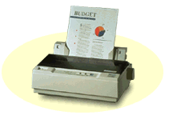

 |
 |
 |
| Matrièni | Laserski | Color Ink Jet |
 |
|
|
| Matrièni | Laserski | Color Ink Jet |
Ureðaj zadužen za beleženje na papir. Postoji nekoliko tehnologija pisanja.
Postoje i programski jezici (PDL - Page Description Language), koji su posebno pisani za korespodenciju sa štampaèima. HP-PCL i PostScript su jedni od najèešæe korišæenih za laserske štampaèe. Kod matriènih štampaèa standardni jezik su EPSON eskejp sekvence (EPSON Escape codes).
Za komunikaciju sa kompjuterom koriste paralelni port (Line PrinTer n) i Centronics kabl. LPT port je interfejs velike brzine i komunikacija se može odvijati u oba pravca (8 žica za prenos podataka + kontrolne linije).
Koristi sledeæe parametre:
| adresa | IRQ | |
| LPT1 | 378h | 7 |
| LPT2 | 278h | 5 |
| LPT3 | 3BCh |
Reðe se za povezivanje koristi serijski port, pošto se u tom sluèaju informacije sa štampaèem razmenjuju preko 2 žice.
Programski jezik za opis strane. Razvijen 1978 u XEROX-u. 1982. god. ljudi koji su osmislili Post Script osnivaju ADOBE SYSTEM Inc. Post Script stranicu koju treba otštampati pretvara u informaciju koja se prosleðuje hardveru koji štampa. Kao jezik najviše se koristi na Mekintoš raèunarima i ureðajima za štampu u štaparskoj industriji.
Štampa iglicama kojih može biti 9 ili 24. Široko su zastupljeni u upotrebi jer su relativno jeftini. Otisak na papiru ostavljaju udaranjem iglica u traku sa tintom. Rezolucija 9-to igliènih matriènih štampaèa je nešto preko 100x100 taèaka po kvadratnom inèu. Rezolucija 24-ro igliènih matriènih štampaèa je 360x360 taèaka po kvadratnom inèu.
Radi na istom principu po kome radi fotokopir aparat. Štampanje na laserskom štampaèu funkcioniše na sledeæi naèin: iz RIP-a logièka 0 ili 1 prekida laserski snop koji se preko ogledala prenosi na bubanj. Bubanj je osetljiv na svetlo i ima neko naelektrisanje. Kada svetlo padne na bubanj ta taèka izgubi naelektrisanje. Toner je istog naelektrisanja kao i bubanj. Toner se hvata za bubanj samo tamo gde je bubanj depolarizovan.
Rezolucija laserskog štampaèa je od 300 x 300 taèaka po kvadratnom inèu. Nekoliko puta su skuplji od matriènih štampaèa ali su isto toliko kvalitetniji i brži.
Najpoznatija firma koja proizvodi laserske štampaèe zove se Hewlett Packard. Njihova adresa na Internetu je www.HP.com.
Nova tehnologija štampe, tinta se brizga iz jako tankih dizni po papiru. Jeftina izrada, nema grejanja ali se zato štampani materijal nikako ne slaže s vlagom. Ako doðe u kontakt sa vlažnim vazduhom, papir nabubri i mastilo se otire. Najveæu primenu zbog: cene, lakoæe upotrebe i malih dimenzija našli su kao podrška notebook i lap-top kompjutera. Proizvodi ih nekoliko firmi ali je EPSON najpoznatiji i najkvalitetniji. Rezolucija u kojoj ovi štampaèi rade je: 300 x 300, 600 x 600 i 720 x 720 dpi.
Postoji nekoliko tehnologija pomoæu kojih je moguæe dobiti kolor otisak. Oslanjajuæi se na principe na kojima radi crno-beli štampaè, EPSON je razvio najpopularniju seriju Stylus COLOR štampaèa. Tako pored crnog mastila postoje i kertridži sa tri osnovne štamparske boje boje C, M i Y. Serija Stylus COLOR štampaèa radi u rezolucijima: 720 x 1440 i 1440 x 1440.